Free
powerpoint
Tutorials
|
Free
powerpoint
Tutorials
|
|
 home home |
Stay at Home and Learn | ||||
Format Table Data in PowerPoint |
|||||
|
Tables 1, 2, 3, 4, 5, 6 Charts Flow Charts
The text you entered for the Table in the previous lesson will probably be far too big, and needs formatting. To format the Table Data, click the Table button on the Table and Borders toolbar. A menu will appear: 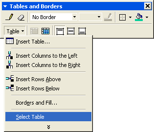 From the menu, click on Select Table. The table itself will then be selected and not a cell or cells inside of the table. Once the table is selected, use the font tools at the top of PowerPoint to change the font size to 12, and the font itself to Arial. Your table should then look like this: 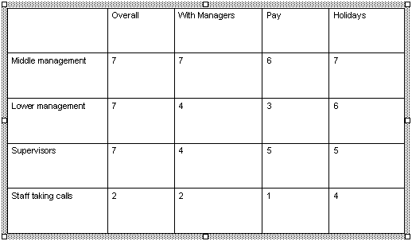 The first Row in the table can be tidied up a bit. Click just before the "O" of "Overall" in the first cell. Hold your left mouse button down. Keep it held down and drag to the right hand side, all the way to the final cell. This will select just the first Row, and should look like this: 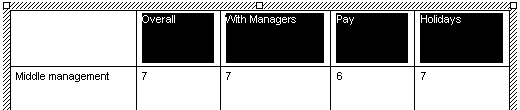 Use the Font tools to change the size to 14, and make the text Bold. With the first Row still selected, click the Table button again on the Table and Borders toolbar. From the menu, select Borders and Fill: 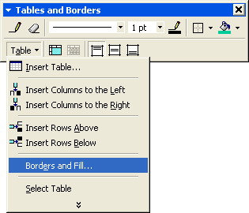 This will bring up the Format Table dialogue box. Click the Text Box tab at the end: 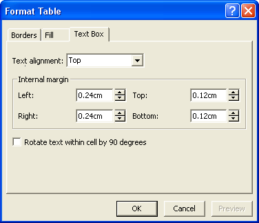 Click the dropdown list for Text Alignment: 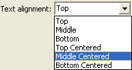 Set the text alignment to Middle Centered. Then click OK. Your first Row will then look like this when you deselect the text: 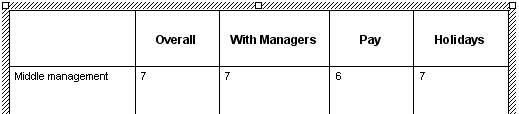 You can centre the text on the left hand side in the same way: select the text, and bring up the Format Table dialogue box again. From the Text Alignment drop down list, select Middle. Your table will then look like this: 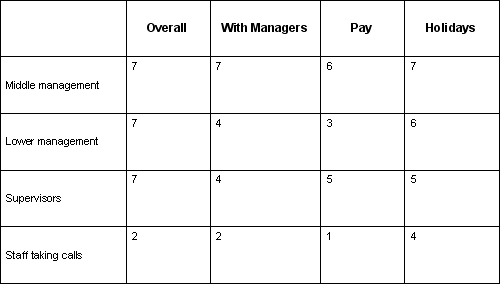 Notice that the numbers aren't centred yet. To centre the numbers, click just before the first 7, in the first cell on the Middle Management row. Hold down your left mouse button and drag all the way to the last number 4 in the bottom right. This will select just the numbers: 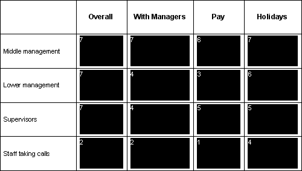 Change the font size to 16. Then bring up the Format Table dialogue box again and centre your numbers. The table will then look like this: 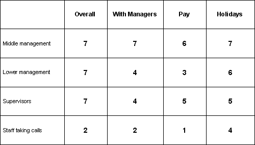 However, the text on the left looks a bit too small! Select just this text, and change the size to 14 points, and make it Bold: 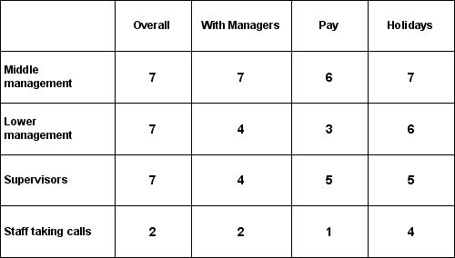 Now that we've increased the font size, the text has spilled over on to two lines. A way we can cure this is increase the width of the first column.
Increase the Width of a Table ColumnTo increase the width of the column, first deselect the text by clicking
inside of any cell. Now move your mouse over the first column line: 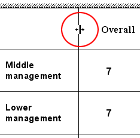 Notice the mouse pointer in the image above, circled in red. This is the resize a column icon. When you pointer looks like that, hold down your left mouse button. Keep it held down and drag to the right. Let go when all the text on the left-hand side is on one line: 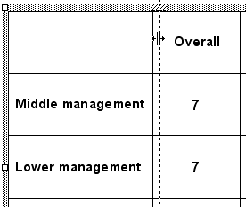 The vertical dotted line you can see tells you that the column is being resized. But you can resize any of the columns in the same way. You can resize Rows in the same way, too. Your table should now look something like ours below: 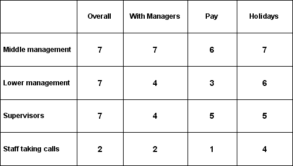
The table is coming along. We can now format the Table Background.
|
||||